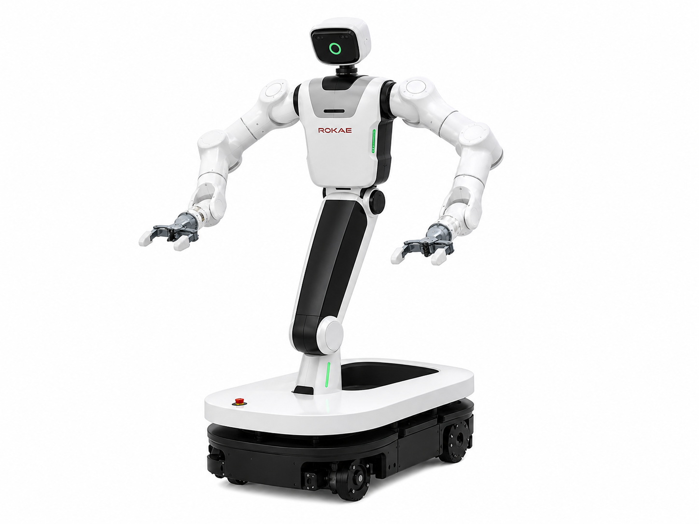

Unitree G1 · Humanoid Robot
G1 Embodied AI
面向 Unitree G1 的具身智能项目，探索视觉感知、三维定位、机器人数据采集、 策略学习与真机控制。
View projectSelected Work
Robotics, embodied AI and perception.
Unitree G1 · Humanoid Robot
面向 Unitree G1 的具身智能项目，探索视觉感知、三维定位、机器人数据采集、 策略学习与真机控制。
View project
ROKAE · Wheeled Dual-Arm Robot
面向 ROKAE 轮式双臂机器人的数据采集与移动操作项目，记录机器人状态、 双臂关节数据和任务过程，为感知、模仿学习与操作策略研究提供数据基础。
View project